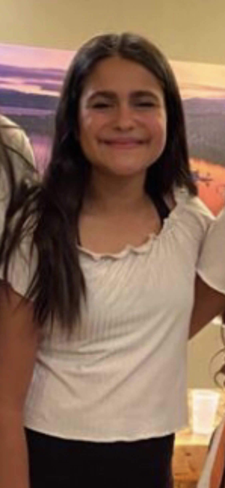

       
     
     

My name is Jasmine Belosay, I have 1 younger sibling, and go to Fallon Middle School. This school year, I will be in 8th grade. In my free time, I like to dance, bake, cook, and sing. My favorite food is sushi. 
Some of my favorite classes I have taken at Fallon so far are Medical Detectives and Leadership. I liked Medical Detectives because it was both fascinating and fun. When I grow up, I want to be a doctor or someone who works with computers because I like helping people and I like working with computers. 
When I’m bored, I like to hang out with my friends, ride bikes, and go hiking. When I can, I like to help younger kids in the neighborhood by taking care of them and helping them make good choices, as well as taking them to the park.

